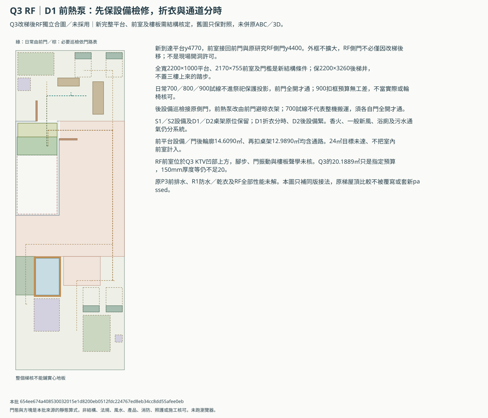
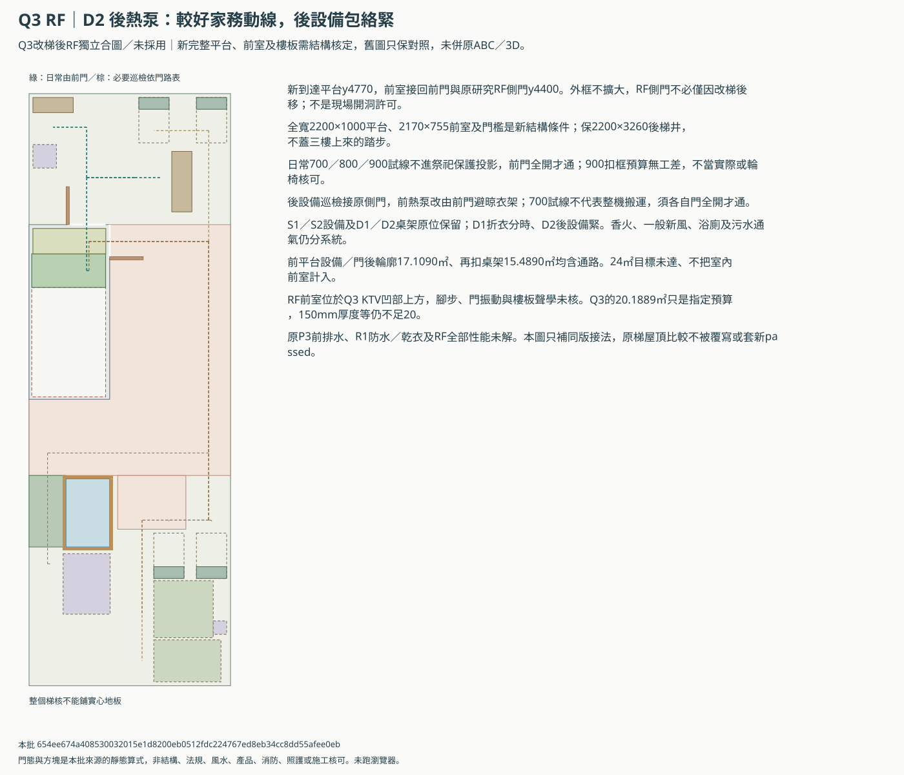
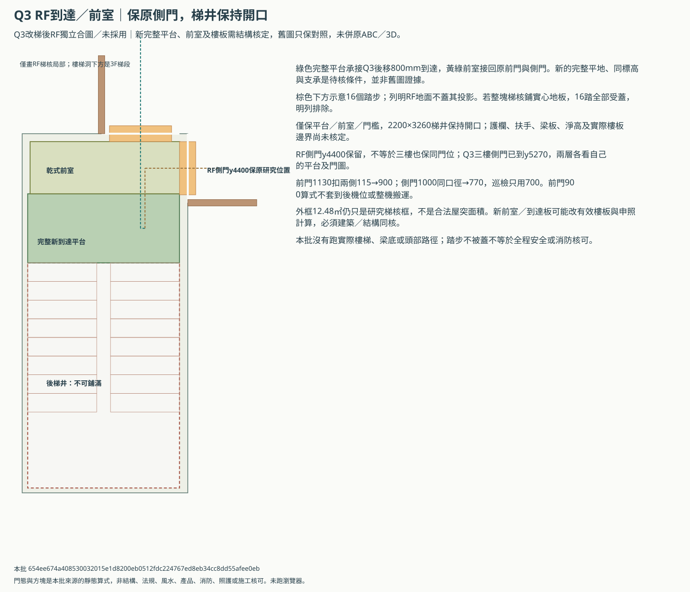

B Q3改梯後的RF到達、門路與設備
獨立同版研究／未採用。明列新平台與前室條件，保原RF側門位置；原ABC／3D、Q2原梯及RF舊版不改，不沿用舊passed。
Q3可用明確新到達平台與前室接回原RF前門／側門，側門不必僅因改梯後移；S1／S2設備與D1／D2桌架原位保留，日常及巡檢門態全部重算。完整樓板／平台仍是結構條件，後梯井保留，900試線不等於成品或照護核可，RF24㎡及其他工程缺口仍保留。
| 項目 | 本輪條件 |
|---|---|
| 新到達 | x80／y4770／2200×1000mm完整平台，待結構核 |
| 前室 | x115／y4015／2170×755mm乾式地面，前／側門檻同版 |
| RF側門 | 中心y4400／1000mm名義洞保留，與3F y5270不同層 |
| 下樓梯洞 | 2200×3260mm保持開口，不可鋪滿 |
| 前門／側門 | 900／770mm扣框預算；日常與巡檢不混用 |
Q3 RF｜D1 前熱泵：先保設備檢修，折衣與通道分時


Q3 RF｜D2 後熱泵：較好家務動線，後設備包絡緊


新平台／前室與不能封閉的下樓梯井


兩案的原代價保留
| 方案 | 設備／門後輪廓㎡ | 再扣桌架㎡ | 日常操作 |
|---|---|---|---|
| Q3 RF｜D1 前熱泵：先保設備檢修，折衣與通道分時 | 14.6090 | 12.9890 | 折衣與通行分時 |
| Q3 RF｜D2 後熱泵：較好家務動線，後設備包絡緊 | 17.1090 | 15.4890 | 桌位較獨立，後設備緊 |
上列面積均含通路，不是完整功能或合法淨面積。原24㎡目標仍缺；前室是室內，不能加算戶外，也不拿後區日常或三樓4㎡天井互抵。
條件與待核
- Q3的RF新到達與S1／S2設備、D1／D2桌架接成獨立同版比較，不改任何原ABC／3D、Q1／Q2／Q3或RF R／S／D來源，也不視為採用。
- 原研究RF梯核外框0／3900／2400／5200不擴大，前門沿D案1130mm左鉸鏈，側門沿原研究中心y4400／1000mm；不表示現場已有門或已獲准開洞。
- Q3到達平台後移800mm，本案明確要求2200×1000mm完整新平台、前方乾式銜接地面及側門檻。完整平台、板厚、支承與同標高皆是新結構條件，不借舊保守右平台或來源畫面當核可。
- RF右側原門前有乾式前室接新平台，因此不必僅為改梯就移RF側門；這與Q3三樓側門已移到y5270是不同樓層，不混用門位。
- RF前室落在Q3左後KTV上方，腳步、門片振動、樓板及穿孔須納入聲學核對；不因平面接通就稱KTV隔音或屋頂安靜已成立。
- 只鋪列明到達／前室，後方2200×3260mm下樓梯洞保持；直接鋪滿梯核會壓到三樓上來的16個示意踏步，不能用完整房間地板封洞。
- 指定前室與到達板在平面不蓋列明3F踏步，只是局部篩檢；整座梯的淨高、梁、扶手、板洞、防火與頭部路徑均未核。
- 日常由前門去前平台，試線不進完整祭祀保護投影；側門只接必要設備巡檢，維持非日常保護用途，不擴張家規許可。
- 前／側門各三態共九組，S1／S2各自重算；前門全開才通日常到達與前熱泵新巡檢線，後設備等巡檢須側門全開，半開或關閉不當可用。
- 700／800／900mm指定日常試線在新完整平台條件內可容納，900mm前門扣框預算沒有額外工差；不當實際完成淨寬、輪椅、消防或整機搬運核可。
- RF側門1000名義洞扣兩側115只給770mm預算，本輪巡檢用700mm，不把日常900mm結果套到後機位或側門。
- 既有D案桌架、S案設備、管井、天井與維修預留位置尺寸全部保留。D1折衣與通路分時，D2後濕設備零／65mm間隙仍緊迫，不因接通就稱全部已可安裝。
- 原S1前熱泵巡檢線會穿D1晾衣架，本案改由前門沿左側接近，不縮或移桌架；其餘設備巡檢重接側門。熱風、污氣、香火／新風回吸、散熱與實際操作姿勢尚未核，試線不證明空氣品質。
- 原前平台24㎡目標仍缺，本案前室是室內通行，不能算成戶外曬衣、把後區日常相加或抵三樓4㎡工作天井。
- 原研究RF梯核框12.48㎡不是已核屋突面積；即使外框不擴大，新前室／平台仍可能影響有效樓板、屋突與法規計算，須建築及結構同核。
- Q3 KTV20.1889㎡仍只對指定隔音／井包／機櫃預算；加厚到150mm、聲閘或較大器材仍可能不足。原P3前排水、天井防水與RF全部設備性能問題未解。
- 若新到達／前室、門組或法規不成立，退回原Q2與其RF比較核對，不把本批結果套到不同樓梯或已填私人回覆；實際資料到齊後另作獨立回套。
door-route-matrix.csv／routes.csv／arrival-widths.csv／engineering-replies.csv
本批 654ee674a408530032015e1d8200eb0512fdc224767ed8eb34cc8dd55afee0eb；樓板與成品、法規、結構、風水、聲學及通風仍未知，未跑瀏覽器／WebGL。